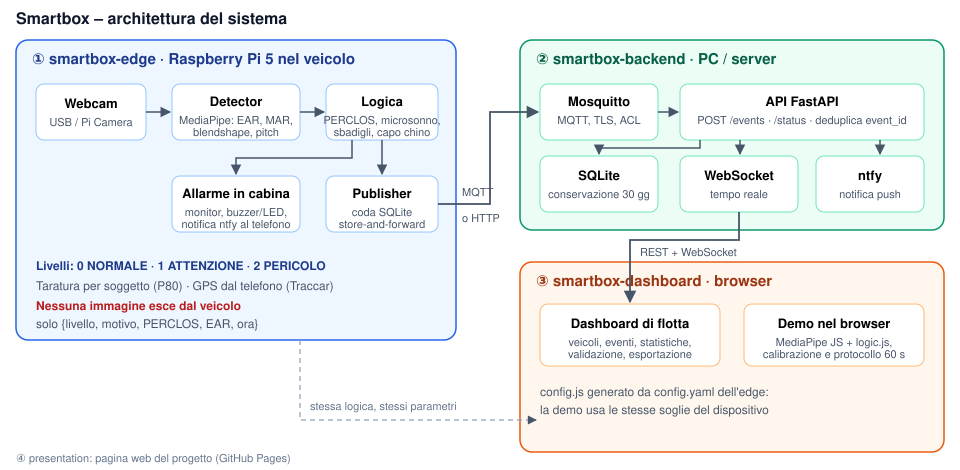

Presentazione
La sonnolenza alla guida riduce l'attenzione molto prima che il guidatore se ne accorga. Smartbox osserva il volto con una webcam nell'abitacolo, misura in tempo reale chiusura degli occhi, sbadigli e chinamento del capo e avvisa il guidatore appena compaiono i segni della stanchezza.
Il progetto nasce da un prototipo di tesi (notebook Colab) ed è stato portato a un sistema completo dispositivo di bordo → backend → dashboard, installato su Raspberry Pi 5 e verificato con prove registrate. L'allarme in cabina non dipende mai dalla rete; al server arriva solo una sintesi di ogni evento (livello, motivo, PERCLOS, EAR, ora).
Funzionalità
Occhi chiusi e microsonni
PERCLOS su 60 secondi e microsonno oltre 1,5 s, dalle blendshape di MediaPipe con l'EAR come ripiego.
Sbadigli
Apertura della bocca (MAR) con durata minima; gli sbadigli ripetuti alzano il livello e non vengono scambiati per occhi chiusi.
Capo chino
Inclinazione del capo rispetto alla posa tarata, anche quando il volto si perde chinandosi.
Taratura per soggetto
Pochi secondi a occhi aperti e chiusi bastano per adattare le soglie al guidatore (criterio P80).
Allarme in cabina
Monitor a colori, buzzer e LED, notifica sul telefono via ntfy, tutto in locale e senza internet.
Eventi affidabili
Coda store-and-forward sul veicolo, MQTT con QoS 1 o HTTP, deduplica con event_id.
Dashboard di flotta
Stato dei veicoli in tempo reale, storico, statistiche, validazione ed esportazione CSV.
Privacy by design
Nessuna immagine salvata o trasmessa; segreti fuori dal codice, broker con TLS e ACL, conservazione 30 giorni.
Architettura

① Edge
Raspberry Pi 5 con webcam: acquisizione a 4 thread, MediaPipe Face Landmarker, logica a tre livelli, allarme e invio.
② Backend
FastAPI con bridge MQTT (Mosquitto), archivio SQLite, WebSocket verso la dashboard, notifiche ntfy.
③ Dashboard
Pagine web statiche: dashboard di flotta e demo nel browser con la stessa logica e gli stessi parametri del dispositivo.
Componenti del sistema
| Componente | Descrizione | Repository |
|---|---|---|
| Dispositivo di bordo | Software per Raspberry Pi 5: misure dal volto, logica di allarme, installazione e servizi systemd | perfez-2526-smartbox-edge-Congedo |
| Backend | API REST, bridge MQTT, archivio, WebSocket, notifiche | perfez-2526-smartbox-backend-Congedo |
| Dashboard | Dashboard di flotta e demo con la webcam nel browser | perfez-2526-smartbox-dashboard-Congedo |
| Presentazione | Questa pagina | perfez-2526-presentation-Congedo |
Verifica
Test di regressione
Test automatici della logica con gli scenari della tesi e i casi osservati nelle prove dal vivo.
Protocollo di prova
Prova guidata di 60 s con episodi veri (occhi chiusi, capo chino) ed episodi di controllo (occhi socchiusi, sbadiglio isolato) per misurare precisione, richiamo e latenza.
Replay
Le prove registrate si rieseguono con la logica attuale per confrontare criteri e soglie, senza registrare di nuovo.
Limiti dichiarati: validazione su un solo soggetto; GPIO, Pi Camera, consumi e temperature ancora da misurare su hardware; la regola sugli occhi va ripetuta al sole e con occhiali.
Video
Test automatici e replay delle prove registrate, prima delle prove su Raspberry. Il video non contiene immagini del volto: mostra le misure registrate fotogramma per fotogramma, rielaborate con la logica attuale del dispositivo. Nella prova 6 le soglie standard non riconoscono gli occhi chiusi; tarate sul guidatore, l'allarme scatta 1,2 s dopo la chiusura.
Generato da tools/make_video.py di questo repository a partire dai dati delle prove e dal codice del repository edge. La taratura è valutata sulla stessa registrazione (verifica ottimistica).
Team
Antonio Congedo
Corso di perfezionamento 2025/26 – UniSalento, IDA Lab